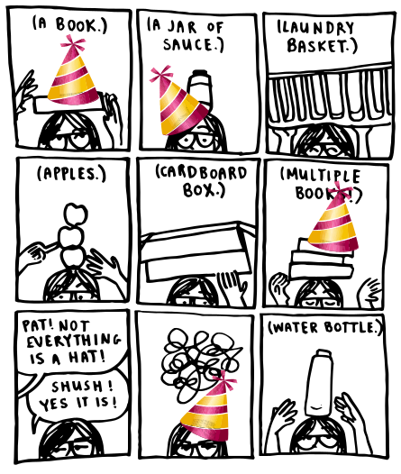

HAPPY FIRST BIRTHDAY, NO PAT NO!
Volume 1 of No Pat No was released on 28 December 2019. Which is freakin' exciting (as exciting as it can be for one lonely girl writing this at an odd hour about her own Internet void). I've made a cover gallery as a little celebratory thingy for anyone else who is here at this one-year mark.
No Pat No may be my best project. It started from a sad time, which you will know if you have read volume 1. But now it's in a good spot, if I do say so myself. Some of the progress didn't happen here, and it was boring, and I ate an embarrassing amount of oatmeal which has nothing to do with anything. But some of it did. Making this art here helped me grow up a LOT.
I've heard from a handful of lovely souls that reading NPN may have been good for you, too. And that makes my day. That someone is reading what I have written (LIKE RIGHT NOW. I'M LOOKING AT YOU) (NOT REALLY) (PROBABLY) is a high honor. Thank you.
And thanks to the friendos who were here when the website was just a cat meme. You know which one. I still like it.
- Pat
P.S. Yes, the turtle tab is gone. Will it return? You'll have to stick around to find out. :)